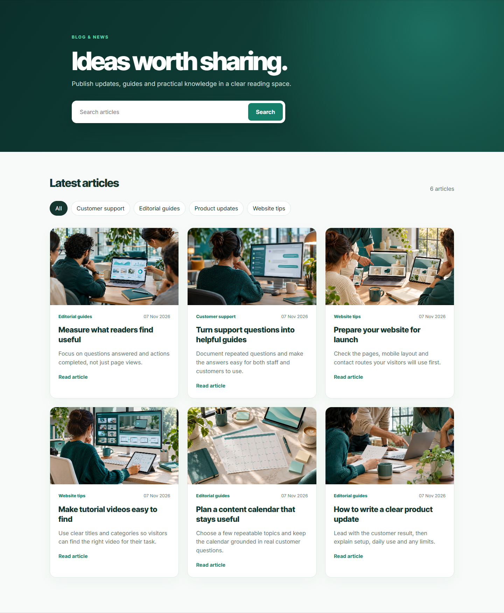
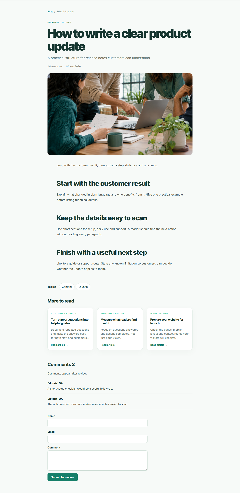
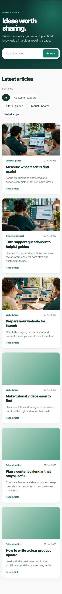

A practical editorial space for your Odoo 20 Community website.
Plan articles, review them before publishing, and give readers a clear path to the next useful story. Authors work with categories, tags, cover images and rich text. Editors manage review and visitor comments from the module's own menus.
The screenshots below show a disposable QA website with six editorial sample articles, original illustrative photographs and two approved sample comments. These examples are for demonstration; a normal installation starts without sample posts.



Install the module, create categories, write an article, submit it for review and publish it. Your readers can then visit /blog. Requires the standard Website, Mail and Portal apps.
Free · LGPL-3 · Support: info@erpcloud.vn